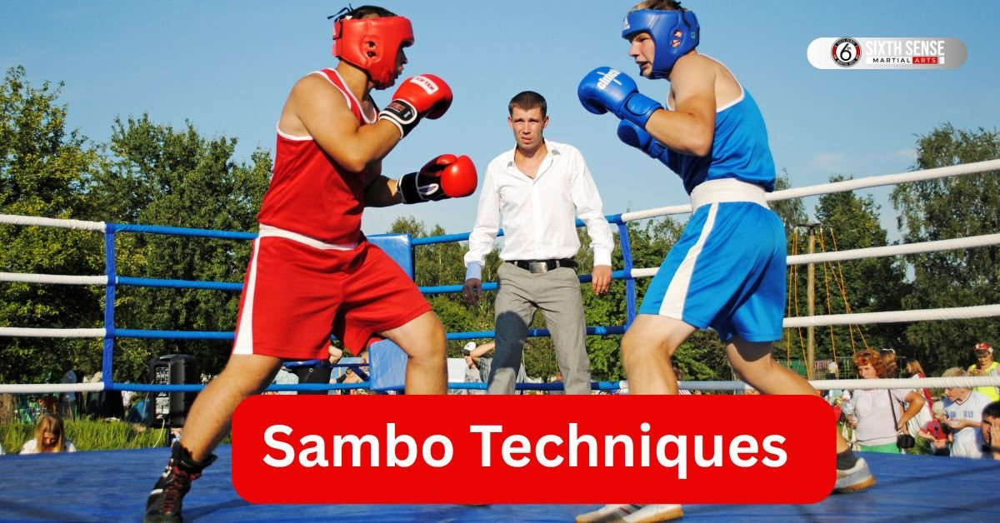
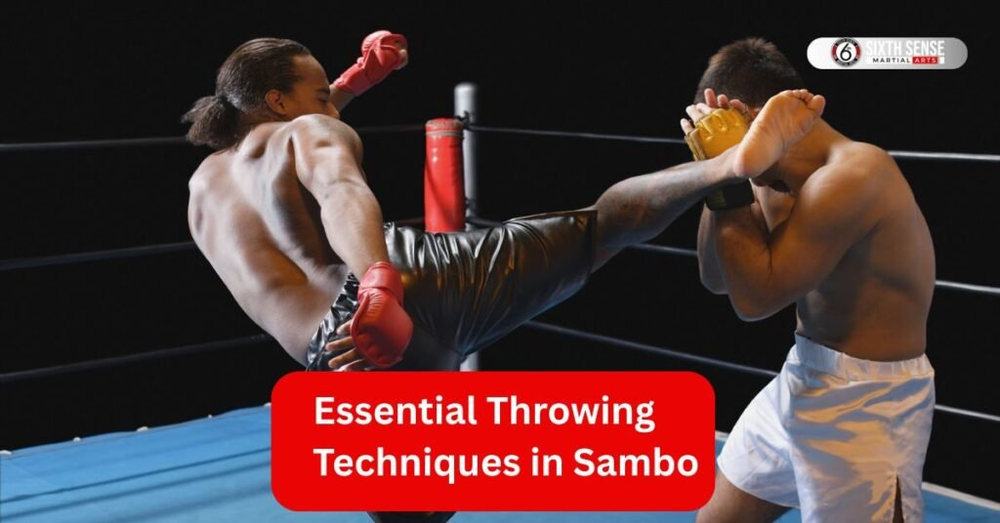
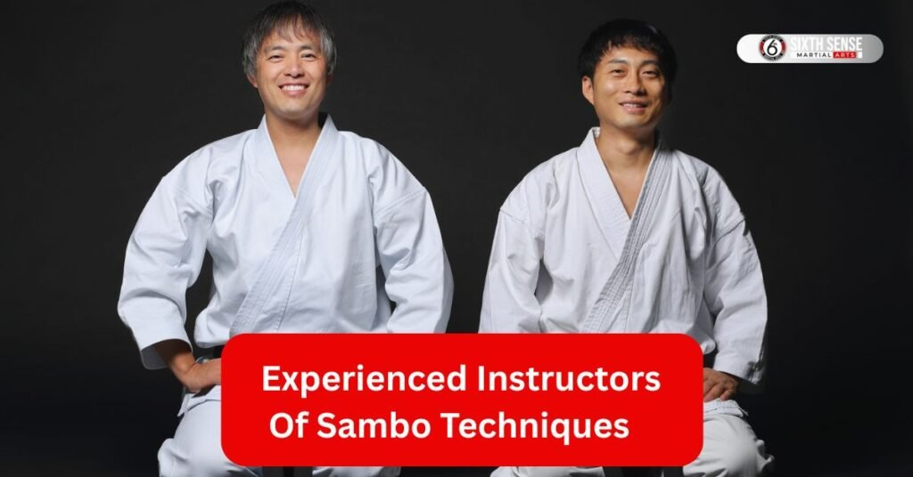

Find the best sambo techniques for self-defense skills

Ever wonder what makes sambo techniques so unique? Sambo a dynamic martial art blends power strategy and adaptability. Born in Russia it’s a mix of grappling techniques throwing techniques and combat skills that make it stand out in the world of martial arts. You are into MMA judo or just curious about combat sports sambo’s practical approach grabs attention. Let’s break down what sambo is where it came from and the core ideas behind its moves. By the end you’ll see why sambo fighters are so respected in the sambo world and beyond.
What Is Sambo as a Martial Art
Sambo is a Russian martial art that’s as versatile as it gets. Short for “self-defense without weapons ” it combines throws and grappling with striking techniques depending on the type of sambo you’re looking at. You’ve got sport sambo focused on competitive sport with rules like restrictions on gripping and holds and combat sambo which adds punches and kicks for real-world self-defense.
Think of it as a toolbox sambo gives you throws joint locks and ground control to handle any opponent. Unlike judo which sticks mostly to throws or MMA which is broader sambo sits in a sweet spot. It’s practical tough and built for both sambo championships and hand-to-hand combat situations. You are training at a sambo academy or watching sambo events the focus is on skills that work in real life.
Origins and Development of Sambo
Sambo didn’t just pop up overnight. Back in the early 20th century the Soviet military wanted a system to improve hand-to-hand combat for the Red Army. Two guys Vasili Oshchepkov and Viktor Spiridonov started mixing Russian wrestling with techniques from judo and other styles.
Later Anatoly Kharlampiev polished it into what we know as sambo today. By 1938 it was recognized as an official sport in the Russian SFSR. From there it spread as an international sport with groups like the World Combat Sambo Federation pushing it forward. Fun fact: sambo even has a beach sambo version now! It’s come a long way from its military sambo roots blending freestyle sambo and amateur sambo into a global combat sport.
Key Principles Behind Sambo Techniques
What makes sambo tick? Here are the core ideas driving its techniques:
- Adaptability: Sambo’s strength is its flexibility. You are using a hip throw or submission techniques you adjust to the situation. Sport sambo might limit chokes but combat sambo lets you go all out with practical techniques for real-world fights.
- Efficiency: Every move in sambo training aims to take your opponent to the ground fast. Throws and takedowns like leg locks or joint locks use minimal effort for maximum impact. It’s about smart not just strong.
- Control: Ground control is king. Once your opponent’s down sambo skills like grappling techniques help you dominate. Unlike some martial arts where chokeholds are not allowed combat sambo uses them strategically for submission.
- Practicality: Designed for real-world self-defense sambo’s combat system pulls from military training. It’s not just about winning in sambo competitions it’s about hand-to-hand combat abilities that work in actual combat situations.
Sambo’s mix of amateur wrestling throwing techniques and combat techniques makes it a recognized martial art with a unique edge. Whether you want to learn sambo for sport or self-defense these principles keep it effective and exciting.
Types of Sambo
Sambo comes in different flavors each tailored for specific goals within sambo techniques. You might think of it as branches from the same tree all rooted in that Russian martial art heritage we talked about earlier. Sport sambo emphasizes competition with clean rules while combat sambo ramps up the intensity for self-defense scenarios. Then there’s military sambo geared toward practical combat situations in armed forces training.
Freestyle sambo allows more creativity in moves blending elements from various styles. Sambo wrestling focuses on ground work similar to amateur wrestling but with unique twists. No matter the type sambo aims to build hand-to-hand combat skills through throws and takedowns submissions and control. People learn sambo for fitness sport or real-life protection making it versatile. Organizations like the American Sambo Association in 2004 helped spread it worldwide turning sambo into an international amateur pursuit. Today sambo events draw crowds showcasing sambo fighters in action-packed matches.
Sport Sambo Features
Sport sambo stands out in sambo techniques for its focus on fair play and athleticism. Competitors wear a sambo uniform usually a jacket and shorts to allow for grips without too much restriction. Rules here include no chokeholds are not allowed keeping things safer for amateur sambo participants. Emphasis falls on throwing techniques and grappling techniques to score points by pinning or submitting opponents. Matches happen on mats with judges scoring based on clean executions.
Sambo training for this type builds endurance and strategy perfect for sambo championships. Unlike mixed martial arts it avoids strikes sticking to throws and grappling. Practitioners improve hand-to-hand combat abilities through drills that stress technique over brute force. As a competitive sport sport sambo promotes discipline and respect drawing from its roots as a martial art and combat sport.
Combat Sambo Differences
Combat sambo flips the script from sport sambo by adding striking techniques into the mix of sambo techniques. Punches kicks and even headbutts come into play making it closer to modern mixed martial arts. While sport sambo bans chokes combat sambo allows joint locks and chokes for more realistic fights. Designed for hand-to-hand combat it includes elements from combat sambo competitions where anything goes within safety limits.
Sambo fighters here wear protective gear to handle the intensity. Training involves scenarios that mimic real combat situations boosting hand-to-hand combat skills. Roots trace back to the Soviet military where it was meant to prepare soldiers for unarmed combat. Today combat sambo stands as an official combat sport with events testing full-range abilities. Differences lie in its aggressive approach setting it apart from tamer versions.
Military Sambo Applications
Military sambo takes sambo techniques into high-stakes environments focusing on practical techniques for soldiers. Developed to enhance hand-to-hand combat training in the Red Army it pulls from Vasili Oshchepkov and Viktor Spiridonov’s ideas. Moves here prioritize quick takedowns and submissions to neutralize threats fast. Unlike sport sambo it includes special sambo elements for disarming opponents or handling weapons.
Training happens in military settings building sambo skills for real-world self-defense. Applications extend to law enforcement too where ground control and leg locks prove vital. As a combat system it adapts freestyle sambo with no restrictions on gripping and holds in practice. Soldiers learn to bring an opponent to the ground efficiently using throws and takedowns. Recognized as an official sport now military sambo remains tied to its origins in improving hand-to-hand combat for defense forces.
Essential Throwing Techniques in Sambo
Throwing techniques form the backbone of sambo techniques pulling from its roots as a martial art designed for quick dominance. In sambo throws help you bring an opponent to the ground efficiently setting up for submissions or control. Here are some essential ones every sambo fighter should master:
- Hip Throws: These use your body as a pivot to flip opponents over. Sambo training often starts here because they’re powerful and versatile in both sport sambo and combat sambo.
- Leg Reaps: Sweeping an opponent’s legs disrupts balance fast. Perfect for takedowns in competitive sport or hand-to-hand combat they blend speed with precision.
- Sacrifice Throws: You drop your own body to launch the throw catching opponents off guard. Military sambo loves these for their surprise element in combat situations.
- Shoulder Throws: Hoisting opponents over your shoulder demands strength and timing. Sambo fighters drill these to improve hand-to-hand combat abilities in matches or real fights.
- Arm Throws: Using arms to twist and pull these fit well in freestyle sambo. They transition smoothly into joint locks and chokes once on the ground.
Sambo’s throwing techniques draw from judo and amateur wrestling but with a twist for practical techniques in the sambo world. Whether in sambo championships or everyday training at a sambo academy mastering these builds core sambo skills. Fighters wear sambo uniforms to practice grips safely avoiding restrictions on gripping and holds that might apply in certain rulesets. Overall these moves make sambo a recognized martial art for both sport and self-defense.

Hip Throws and Their Execution
Hip throws shine in sambo techniques for their power and control. Start by gripping your opponent’s sambo uniform firmly at the lapel and sleeve. Step in close turning your hips to face them while pulling forward. Your hip acts as the fulcrum push it into their lower body. Bend your knees slightly for stability and lift with your legs not just arms. Rotate your torso to send them over your hip in a smooth arc. Land them flat on their back for maximum points in sport sambo or to set up ground control in combat sambo. Practice this in sambo training sessions to build muscle memory. Common mistakes include poor timing or weak grips so focus on those. Sambo fighters often combine hip throws with striking techniques in combat versions. Roots in Russian martial art make these throws efficient for taking opponents down quickly. Keep drills varied to handle different body types and resistances.
Leg Reaps for Takedowns
Leg reaps offer quick ways to unbalance foes in sambo techniques. Position yourself side-on to your opponent grabbing their arm or jacket. Swing your leg behind theirs in a sweeping motion targeting the ankle or calf. Pull their upper body toward you while reaping to amplify the fall. Timing matters do it when they’re shifting weight. In combat sambo follow up with strikes if needed. Sport sambo rules might limit certain variations but basics stay the same. Sambo training emphasizes footwork here to avoid counters. Blend these with throws and grappling for full effect. Fighters in sambo events use leg reaps to score takedowns efficiently. Draw from hand-to-hand combat training in the Soviet military for real-world application. Practice on mats to prevent injuries and refine technique. Variations include inner and outer reaps each suited to different scenarios.
Sacrifice Throws Step by Step
Sacrifice throws in sambo techniques involve giving up your stance to topple opponents. Here’s how to execute one effectively:
- Grip Setup: Secure a strong hold on your opponent’s arms or uniform. Pull them slightly off balance to commit their weight forward.
- Drop and Pivot: Lower your body quickly sitting back while twisting. Use your leg to hook theirs for leverage.
- Launch the Throw: Roll backward pulling them over you. Your momentum flips them onto the mat.
- Follow Through: Land in a position to transition into ground control or submission techniques like leg locks.
These work well in military sambo for surprise attacks in unarmed combat. Sambo fighters train them to build confidence in falling safely. Unlike hip throws sacrifice ones risk your position but reward with big impacts. In sambo competitions they score high when done right. Roots in improving hand-to-hand combat for the Red Army show their practical side. Avoid overusing them against skilled opponents who might counter. Drill step by step at a sambo academy to master the flow.
Ground Grappling and Submission Holds
Once you bring an opponent to the ground sambo techniques really shine with ground grappling and submission holds. This part of sambo rooted in its Russian martial art origins focuses on dominating through control and forcing a tap-out. Whether in sport sambo or combat sambo these skills make sambo fighters tough to beat on the mat. Ground work pulls heavily from amateur wrestling but adds sambo’s unique flair with joint locks and chokes.
Unlike judo which leans more on throws sambo’s grappling techniques emphasize practical techniques for both sambo championships and real-world self-defense. Training at a sambo academy hones these moves teaching you to transition smoothly between positions. In combat sambo you might mix in striking techniques for extra impact. Ground control is key You are aiming for a pin in sport sambo or a quick submission in military sambo. Sambo events showcase these skills proving why sambo is a recognized martial art for both sport and combat situations.
Arm Locks and Joint Manipulations
Arm locks in sambo techniques target the elbow or shoulder to force submission. Start by securing your opponent’s arm often after a throw or takedown. Twist the arm while pinning their body to limit movement. Common moves like the armbar hyperextend the elbow making taps quick in sambo competitions. Joint manipulations also include wrist locks which work in combat sambo for hand-to-hand combat skills.
Sambo training drills these to build precision as sloppy grips can let opponents escape. Unlike MMA where strikes might dominate sambo focuses on clean technique here. Roots in Soviet military training emphasize efficiency disable fast without wasting energy. Practice on mats to avoid injury and wear a sambo uniform for better grip control. These moves shine in freestyle sambo where fewer restrictions on gripping and holds allow creativity. Mastering arm locks boosts your sambo skills for both sport and self-defense.
Leg Locks for Control
Leg locks are a sambo specialty perfect for controlling opponents on the ground. Target the knee or ankle with moves like the heel hook or kneebar. After a takedown isolate their leg by trapping it between yours. Twist or extend to apply pressure forcing a submission or limiting their movement. Sport sambo allows some leg locks but combat sambo goes further using them for real-world self-defense.
Sambo fighters train these carefully as they can cause injury if mishandled. Unlike joint locks and chokes in other martial arts sambo’s leg locks draw from its combat system roots designed for military training. Timing and leverage matter more than strength. In sambo events these moves score big by showing dominance. Practice transitions to leg locks during sambo training to flow naturally from throws and grappling. They’re a game-changer in the sambo world setting you up for ground control.
Pins and Transitions on the Mat
Pins in sambo techniques lock your opponent down earning points in sport sambo or setting up submissions in combat sambo. Start with a strong base like side control pressing your weight into their torso. Keep their shoulders flat to the mat for a pin or shift to mount positions for better dominance. Transitions are just as vital move smoothly from a pin to a submission hold like an arm lock or leg lock. Sambo training emphasizes fluid shifts to maintain control.
In military sambo these skills help neutralize threats fast in unarmed combat. Unlike judo where pins are more static sambo’s ground work blends throws and takedowns into dynamic sequences. Sambo fighters drill these at a sambo academy to react instinctively. Even in competitive sport transitions showcase hand-to-hand combat abilities. Mats and proper sambo uniforms keep practice safe letting you refine these practical techniques for any scenario.
Striking Elements in Combat Sambo
Combat sambo stands out in sambo techniques by weaving striking techniques into its core unlike sport sambo’s focus on throws and grappling. Drawing from its Russian martial art roots combat sambo blends punches kicks and clinch work to create a versatile combat system. These strikes make it closer to modern mixed martial arts preparing sambo fighters for real-world self-defense and intense sambo events. Whether training at a sambo academy or competing in combat sambo competitions you learn to balance strikes with grappling techniques for maximum impact.
Sambo uniforms offer flexibility for these dynamic moves and the lack of restrictions on gripping and holds in combat sambo allows creative combinations. Striking adds a layer of aggression rooted in Soviet military training to handle combat situations effectively. From sambo championships to practical scenarios these skills showcase why sambo is a recognized martial art for both sport and survival.
Punches and Kicks Integration
Punches and kicks in combat sambo bring a street-ready edge to sambo techniques. Start with basic jabs and crosses aiming for the head or body to disrupt your opponent’s rhythm. Kicks like front or roundhouse target legs or midsection to create openings for throws and takedowns. Unlike sport sambo where strikes aren’t allowed combat sambo integrates these seamlessly with grappling. Sambo training drills combos like a jab followed by a hip throw to flow naturally.
Fighters wear protective gear to practice safely especially in combat sambo competitions. These moves draw from hand-to-hand combat skills developed for the Red Army emphasizing quick powerful hits. Timing matters strike when your opponent moves in then transition to ground control. Sambo fighters refine these at a sambo academy to build confidence in real-world self-defense. Mixing strikes with submissions makes combat sambo a standout in the sambo world.
Clinch Work for Close Range
Clinch work in combat sambo is all about controlling opponents up close blending strikes with sambo techniques. Grab the neck or arms using the sambo uniform for grip and pull them into your range. From here throw short punches or knees to weaken their stance. Unlike judo which avoids strikes combat sambo uses clinching to set up throws or submissions like joint locks and chokes. Roots in military sambo show its design for hand-to-hand combat in tight spaces.
Training focuses on balance keep your footing while breaking theirs. In sambo events clinch work scores by showing dominance before a takedown. Practice transitions to leg locks or arm locks for fluid attacks. Sambo fighters drill these moves to handle combat situations making clinch work a practical technique for both sport and self-defense. Mats and proper gear keep it safe while you sharpen your skills.
Benefits of Practicing Sambo Techniques
Learning sambo techniques does more than just teach you how to throw or grapple it transforms your body and mind. Rooted in Russian martial art sambo blends physical power with practical skills making it a standout in the sambo world. You are training at a sambo academy or competing in sambo events the benefits stack up fast. Here’s why sambo is worth your time:
- Physical Fitness: Sambo training builds strength agility and endurance through throws and grappling. It’s a full-body workout that rivals any gym session.
- Self-Defense Skills: From combat sambo’s striking techniques to sport sambo’s submissions you gain tools for real-world self-defense.
- Mental Discipline: Mastering sambo techniques sharpens focus and resilience traits that spill over into daily life.
- Versatility: Sambo’s mix of freestyle sambo and military sambo elements means you’re ready for both sambo championships and combat situations.
- Confidence: Hand-to-hand combat skills boost your self-assurance whether on the mat or in real life.
Unlike judo or MMA sambo’s unique blend of throws and takedowns joint locks and ground control offers a balanced approach. Recognized as an official sport it’s grown from its Soviet military roots into a global combat sport. Practicing sambo builds a foundation for both sport and survival making it a solid pick for anyone looking to grow stronger and smarter.
Physical Fitness Gains
Sambo techniques demand serious physical effort making them a killer workout. Training involves throwing techniques grappling and striking in combat sambo which hit every muscle group. You’ll build strength from lifting opponents during hip throws or pinning them in ground control. Agility comes from dodging and moving in sambo uniforms during drills.
Endurance grows through long sessions at a sambo academy mimicking the intensity of sambo competitions. Unlike static gym routines sambo keeps you moving dynamically boosting cardio and flexibility. Studies from sambo federations like the World Combat Sambo Federation show practitioners gain lean muscle and better stamina. Even beach sambo adds fun while burning calories. You are a beginner or seasoned sambo training pushes your body to new levels keeping you fit for both sport and life.
Self-Defense Skills Improvement
Sambo techniques shine for real-world self-defense especially in combat sambo. Moves like leg locks arm locks and throws and takedowns let you neutralize threats fast. Unlike sport sambo where chokeholds are not allowed combat sambo includes joint locks and chokes for practical use. Training teaches you to react instinctively in combat situations drawing from military sambo’s roots in hand-to-hand combat training.
You learn to bring an opponent to the ground and control them whether it’s a street encounter or a controlled match. Sambo fighters practice scenarios that mimic real-life threats building hand-to-hand combat abilities. Unlike MMA which can feel chaotic sambo’s structured approach ensures every move counts. Regular practice at a sambo academy hones these skills making you ready for anything life throws your way.
Mental Discipline Building
Sambo techniques aren’t just about the body they sharpen your mind too. Learning complex moves like sacrifice throws or submission techniques requires intense focus. You’ve got to stay calm under pressure whether in sambo championships or sparring at a sambo academy. Discipline grows from repeating drills perfecting timing and adapting to opponents.
Unlike some martial arts sambo’s combat system demands quick thinking especially in freestyle sambo where creativity rules. Roots in Soviet military training emphasize mental toughness helping you handle stress in and out of combat. Practitioners often say sambo builds patience and resilience skills that help in everyday challenges. By mastering sambo skills you train your brain to stay sharp and composed turning you into a more focused version of yourself.
Sambo Academy Programs at Sixth Sense MMA
Sixth Sense MMA runs a top-notch sambo academy where folks dive into sambo techniques with hands-on guidance. Picture a place buzzing with energy mats covered in sweat and coaches pushing you to unlock your potential in this Russian martial art. Their programs cater to everyone from newbies eager to learn sambo basics to pros sharpening edges in combat sambo or sport sambo. Classes blend throwing techniques grappling techniques and submission techniques all while wearing the classic sambo uniform for that authentic feel.
Whether you’re into MMA or judo cross-training these sessions build sambo skills that transfer to mixed martial arts. Sambo fighters here train like champs prepping for sambo championships or just boosting hand-to-hand combat abilities. At Sixth Sense sambo training isn’t rigid it’s fun progressive and tied to the combat sport’s roots. Expect drills on hip throws leg locks and ground control plus tips on real-world self-defense. Joining means stepping into a community that values freestyle sambo creativity alongside military sambo discipline. Overall their sambo academy setup makes it easy to grow from amateur sambo to competitive levels.
Beginner Classes to Learn Sambo
Beginner classes at Sixth Sense MMA’s sambo academy ease you into sambo techniques without overwhelming the senses. Coaches start slow covering fundamentals like basic throws and takedowns to build a solid base. You’ll learn sambo in a supportive group focusing on safety and form in your sambo uniform. Sessions mix instruction with light sparring helping you grasp combat sambo or sport sambo flavors early. No prior martial art experience needed just show up ready to sweat.
These classes teach hand-to-hand combat skills through simple drills echoing the practical techniques from Vasili Oshchepkov’s era. By week’s end you’ll execute a basic hip throw or escape a simple pin. Sambo training here stresses fun so expect laughs amid the effort. It’s perfect for those wanting to improve hand-to-hand combat without jumping straight into intense sambo competitions. Small groups mean personalized feedback turning rookies into confident grapplers fast.
Advanced Sessions for Skill Refinement
Advanced sessions at the sambo academy crank up the challenge honing sambo techniques for those already comfy on the mat. Think intense rounds of live rolling where you apply striking techniques in combat sambo or refine joint locks and chokes in sport sambo. Coaches at Sixth Sense MMA spot flaws in your ground control or leg reaps offering tweaks for peak performance. These classes dive deeper into sambo wrestling elements blending amateur wrestling with unique Russian martial art twists.
Expect scenarios mimicking combat situations building on your hand-to-hand combat training. Sambo fighters push limits here prepping for world championships or personal goals. Sessions end with cool-downs and strategy talks fostering that mental edge from military training roots. If you’re chasing sambo mastery these refine your throws and grappling like nothing else. Community vibes keep it motivating with peers sharing tips on everything from sambo events to daily practice.
Why Pick Sixth Sense MMA for Sambo Techniques
Choosing Sixth Sense MMA for sambo techniques sets you up for success in this Russian martial art. Their sambo academy stands out with a mix of expert coaching tailored training and a tight-knit vibe. You are eyeing sport sambo or combat sambo here’s why it’s a great pick:
- Expert Coaches: Instructors bring years of experience guiding you through throws and grappling with precision.
- Custom Plans: Training adapts to your skill level from beginner to sambo championship hopefuls.
- Community Feel: You’re not just a student; you’re part of a supportive sambo world that pushes you forward.
- Practical Focus: Programs emphasize hand-to-hand combat skills rooted in military sambo for real-world use.
- Versatile Training: Sessions cover freestyle sambo submission techniques and ground control blending martial art and combat sport.
Unlike generic gyms Sixth Sense MMA tailors sambo training to fit your goals whether for sambo events or self-defense. Their approach echoes the practical techniques of the Soviet military making every session count. Sambo fighters here wear sambo uniforms drilling everything from hip throws to leg locks. Joining means stepping into a program recognized for building sambo skills that work in and out of the ring.

Experienced Instructors Of Sambo Techniques
Experienced Instructors and Custom Plans
Instructors at Sixth Sense MMA know sambo techniques inside out bringing expertise from years in combat sambo and sport sambo. They’ve trained under systems tied to sambo’s roots like those from Anatoly Kharlampiev’s era and pass that knowledge on. You are new or seasoned they craft custom plans to match your pace. Beginners might focus on basic throws and takedowns while advanced folks dive into joint locks and chokes.
Coaches break down complex moves ensuring you grasp the mechanics behind ground control or striking techniques. Unlike cookie-cutter classes these plans evolve with your progress prepping you for sambo competitions or hand-to-hand combat scenarios. Expect one-on-one feedback during sambo training making every session feel personal. Their approach builds confidence You are aiming for a local match or just want solid self-defense skills.
Community and Support System
Sixth Sense MMA’s sambo academy thrives on its community making it more than just a place to learn sambo. You’re surrounded by sambo fighters who share tips from nailing a leg reap to staying calm in combat situations. Unlike solo gym workouts this group vibe keeps you motivated. Teammates cheer during tough drills creating bonds that echo the camaraderie of sambo events.
Coaches foster a welcoming space encouraging everyone to grow their hand-to-hand combat abilities. You are into freestyle sambo or eyeing world championships the support system pushes you to improve. Newbies get tips from vets and everyone shares the grind of sambo training. It’s a place where sambo skills grow alongside friendships rooted in the martial art’s practical team-driven spirit. You’ll feel at home You are rolling on mats or chatting post-class.
Customer Reviews
Stacie Arce
“My son has been coming since December and grown so much. Coach Matheus is a jiu jitsu master from Brazil but more important than that, he is a skilled coach. He really makes the place special.”
Danilo De souza
“Family friendly and professional. My kids love Coach Matheus and Coach Milly. They’ve grown so much in confidence and discipline learning with them! 100% recommended!”
Márcio Rabelo
“Such a good vibe at this gym. Everyone’s super friendly and the coaches really know their stuff. It’s one of those places you feel comfortable right away with Coach Matheus, great mix of hard work and fun. Definitely worth checking out if you’re into Jiu Jitsu!”
juwaryiyya
“Extremely welcoming staff, the coach explained everything so well. It is the favorite part of my day! I also feel very comfortable as a Muslim woman because of how the room is shaped like an L giving privacy and comfort for sisters.”
Kaivan Askari
“Professor Matheus is amazing with the kids. His children’s classes are amazing. He also has a very consistent teaching style for adults as well.”
Contact Us
Got a question or ready to start your journey? Our team at Sixth Sense MMA is here for you, day or night. Located at 817 S MacArthur Blvd #100, Coppell, TX 75019, we’re just a step away. Ring us up at 469-972-7800 or shoot an email to info@sixthsensemma.com someone’s always around to chat. Need a quick answer? Drop by during our open hours, and we’ll sort you out. Our crew loves helping, whether it’s about classes or that free trial you’ve been eyeing. If any doubt pops up, don’t wait reach out, and let’s get you moving!
Conclusion
Sambo techniques offer a unique blend of power strategy and practicality making them a standout in the world of martial arts. From its roots as a Russian martial art sambo has grown into a global combat sport loved for its versatility in sport sambo combat sambo and even military sambo. You are mastering hip throws leg locks or ground control at a sambo academy like Sixth Sense MMA you’re building skills that work in sambo championships or real-world self-defense. Training hones not just your body but your mind boosting confidence and discipline through every drill.
Sambo fighters learn to adapt blending throws and grappling with striking techniques for a well-rounded approach. Unlike judo or MMA sambo’s focus on practical techniques keeps it grounded in hand-to-hand combat origins from the Soviet military. Joining a program means stepping into a community where sambo skills thrive You are a beginner or chasing world championships. So lace up that sambo uniform and dive into the sambo world your journey starts with a single throw.
Follow Us on Social Media
Stay connected with Sixth Sense MMA through our social media channels. Follow us for class updates, training tips, and a closer look at our self defense community.
FAQ’s
Sambo is a Russian martial art meaning “self-defense without weapons.” It combines throws, grappling, and striking techniques to create a practical combat system. Unlike judo, which focuses mainly on throws, or MMA, which blends multiple disciplines, sambo bridges both worlds—making it effective for sport competitions and real-world self-defense.
Sambo includes sport sambo, combat sambo, military sambo, and freestyle sambo. Sport sambo emphasizes throws and grappling without strikes, while combat sambo adds punches, kicks, and chokes. Military sambo focuses on real combat situations for soldiers, and freestyle sambo allows more creative and mixed techniques.
Sambo techniques are built for adaptability and control. Practitioners learn to take down opponents quickly using efficient throws, leg locks, and ground control. Combat sambo adds realistic striking, preparing you for self-defense in unpredictable situations—making it one of the most practical martial arts today.
Key throwing techniques include hip throws, leg reaps, shoulder throws, sacrifice throws, and arm throws. These moves help sambo fighters unbalance opponents and gain dominant ground positions. Regular sambo training refines timing, strength, and leverage to make each throw smooth and effective.
Yes, Sambo is well-known for its ground grappling and submission holds. Practitioners master arm locks, leg locks, pins, and joint manipulations to dominate on the mat. These techniques not only earn points in sport sambo but are also vital in self-defense and combat sambo situations.
Train with us in Coppell
The first class is free. Shorts, a t-shirt and a water bottle. We lend the rest.
Book a free class